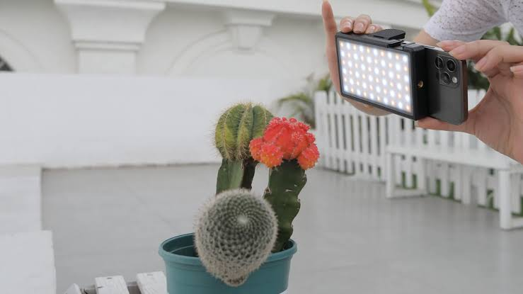

Mastering Mobile Lighting: How To Use Light For Professional Photos And Videos

Lighting is the secret sauce behind every stunning photo or cinematic video. Even with a basic phone camera, good lighting can transform your content from average to professional. But if the lighting is off, no camera settings or editing tricks can truly fix it.
In this post, we'll explore how to see light differently, use what you have around you, and start capturing visuals that feel polished and intentional.
Light Is The Real Camera
Let's start with a mindset shift: your phone doesn't actually "see" objects, it sees light.
That means your images aren't just about what you're shooting; they're about how light interacts with what you're shooting. If you can master light, you can master photography and cinematography, even without expensive gear.
Natural Light is Your Best Friend
When you're shooting outside, natural light gives you some of the best result. But it's not just about stepping in the sun. The type of natural light matters.
One of the most powerful tools is the golden hour (the time shortly after sunrise or before sunset). This light is very good for photos and videos. It brings out skin tones, textures, e.t.c.
But be careful with direct midday sunlight, it's harsh and creates hard shadows that can ruin your shots. If you find yourself shooting at this time, try using a reflector, and if you don't have yet, try moving into the shade or use a white cloth or wall to bounce and soften the light.
And here's a golden rule for portraits: always face your subjects towards the light, not away from it, unless you're going for a silhouette effect.
Indoor Lighting Can Work Wonders Too
You don't need a a studio to get a clean, well-lit indoor shots. Most times, a window and a bit of creativity are all you need.
Position your subject beside a window so that the light falls gently on their face or object. You don't want direct sunlight blasting through the window, just soft, diffused light. If one side of your subject looks too dark, you can bounce light back onto it using something simple like a white shirt, a foam board, or even a piece of paper.
Avoid using ceiling bulbs alone. They often create weird shadows on face. Instead, use lamps, phone flashlights, or ring lights placed at eye level or slightly above to mimic natural light.
Balancing Light and Shadow
The real art of lighting is about balance. Too much light and you lose detail. Too little light and you lose clarity.
Learn to control both shadows and highlights. A simple reflector: like a mirror, foil-covered cardboard, or white surface ca help reduce shadows. You can also use cloth or curtains to diffuse harsh lights and make it softer and more even.
Try backlighting your subject by placing a light source behind them. This adds depth, glow, and a proffesional edge, especially for videos or portraits.
Everyday Lights, Cinematic Feel
Don't underestimate what you already have. Fairy lights, candles, bedside lamps, torches, these are called practical lights, and they can add emotion, mood, and storytelling layers to your visuals.
For example, putting a small light source beside your subject can create dramatic lighting. Using two or three phone flashlights from different angels can help you fake a full lighting setup. It's not about expensive tools, it's about creative positioning.
Cinematic Video Lighting Starts With Intention
In cinematography, light doesn't just help us see, it helps us feel. The goal is to make people feel something with your video. That's where intentional lighting comes in.
Try lighting one side of the face and letting the other side fall into shadow for a moody effect. That's a classic film technique called Rembrandt lighting. Or go for a simple three-point lighting style using just regular lamps:
- One as your main light source (key light),
- Another to fill in the shadows on the other side (fill light),
- And one behind the subject to seperate them from the background (back light).
You can use anything: lamps, flashlights, or even colored lights to pull this off. It's about placement and creativity, not gear.
Lighting is a Skill, Not a Gadget
You don't need a ring light to be a lighting expert. What you truly need is an eye for light.
Pay attention to how light hits people in real life. Watch how movies use shadows and glows. Try recreating lighting setups using objects you already have. As you keep experimenting, your eyes will become trained to spot good lighting, and that's where your confidence grows.
Final Thoughts
When it comes to mobile photography and cinematography, lighting is your most powerful tool. It shapes your subject, sets the mood, and seperates beginner work from pro-level visuals.
So before you hit record or tap the shutter, pause for a moment. Ask yourself: How is the light working here? Then shape it, bend it, or find a new angle, and watch your results level up.